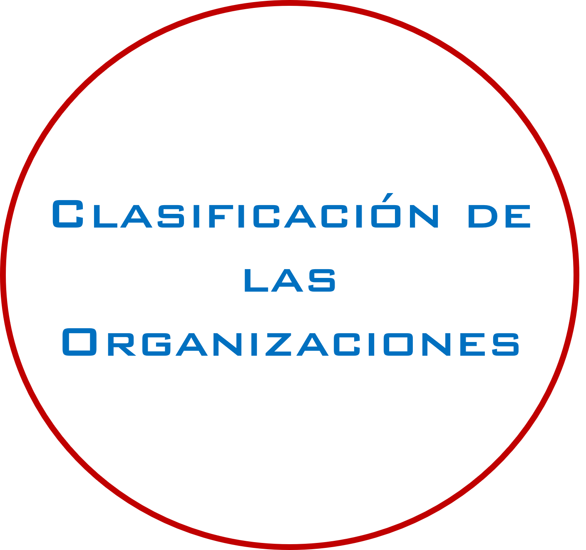

I.I.I Clasificación

A continuación se incluyen algunos ejemplos que ilustran cómo diferentes organizaciones pueden encajar en las
diversas categorías de clasificación según su naturaleza, tamaño, estructura legal y sector de actividad. Cada
una de estas categorías tiene sus propias características y objetivos específicos.
-
Clasificación por su naturaleza o propósito:
-
Organizaciones con fines de lucro: Son entidades cuyo principal objetivo es generar ganancias económicas
para sus propietarios o accionistas, por ejemplo, Apple Inc., una empresa multinacional que busca generar
ganancias a través de la venta de productos electrónicos y software.
-
Organizaciones sin fines de lucro: También conocidas como organizaciones no gubernamentales (ONG), tienen
como objetivo principal promover causas sociales, culturales, educativas o de otro tipo, sin perseguir
beneficios económicos para sus miembros, por ejemplo, Médicos Sin Fronteras (MSF), que proporciona
asistencia médica humanitaria en todo el mundo sin perseguir beneficios económicos.
-
Organizaciones gubernamentales: Son entidades estatales o públicas que operan bajo el control y la
autoridad del gobierno y tienen responsabilidades en la prestación de servicios públicos y la
administración de los asuntos gubernamentales, por ejemplo, El Servicio de Impuestos Internos (IRS) en los
Estados Unidos, una entidad gubernamental encargada de la recaudación de impuestos y la administración de
asuntos fiscales.
-
Clasificación por su tamaño:
-
Pequeñas y medianas empresas (PYMES): Son organizaciones con un número limitado de empleados y recursos,
generalmente con ingresos anuales o activos totales por debajo de ciertos umbrales establecidos en cada
país, por ejemplo, Una tienda de comestibles local con un pequeño equipo de empleados y ventas anuales
limitadas.
-
Grandes empresas: Son organizaciones de gran envergadura, con una gran cantidad de empleados y recursos, y
con operaciones a nivel nacional o internacional, por ejemplo, Microsoft Corporation, una empresa
tecnológica con miles de empleados y operaciones en todo el mundo.
-
Clasificación por su estructura legal:
-
Empresas individuales o unipersonales: Son organizaciones propiedad de una sola persona, quien asume toda
la responsabilidad y riesgo, por ejemplo, Un consultor independiente que trabaja por cuenta propia y es el
único propietario de su negocio.
-
Sociedades: Son organizaciones conformadas por dos o más personas que contribuyen con recursos y comparten
los beneficios y las responsabilidades de manera acordada contractualmente, por ejemplo, Un bufete de
abogados formado por varios socios que comparten recursos y ganancias según un acuerdo contractual.
-
Corporaciones: Son entidades legales independientes de sus propietarios, con derechos y responsabilidades
propias. Se dividen en acciones y tienen una estructura de gobierno corporativo, por ejemplo, Amazon.com,
Inc., una corporación global que cotiza en bolsa y tiene una estructura de gobierno corporativo con
accionistas y directores.
-
Clasificación por su sector de actividad:
-
Organizaciones del sector privado: Son empresas que operan en la economía de mercado y buscan generar
beneficios a través de la venta de bienes o servicios, por ejemplo, Coca-Cola Company, una empresa privada
que se dedica a la producción y venta de bebidas no alcohólicas.
-
Organizaciones del sector público: Son entidades gubernamentales encargadas de la prestación de servicios
públicos y la administración de los asuntos estatales, por ejemplo, El Departamento de Policía de Nueva
York (NYPD), una entidad gubernamental encargada de mantener el orden público y hacer cumplir la ley.
-
Organizaciones del sector social: Incluyen a las ONG y otras organizaciones sin fines de lucro que
trabajan en áreas como la asistencia social, la salud, la educación, el medio ambiente, entre otras, por
ejemplo, Cruz Roja, una organización humanitaria sin fines de lucro que presta asistencia en caso de
desastres naturales y conflictos armados.
Cabe mencionar que algunas organizaciones pueden caer en múltiples categorías o tener características mixtas
dependiendo de su estructura y finalidades.